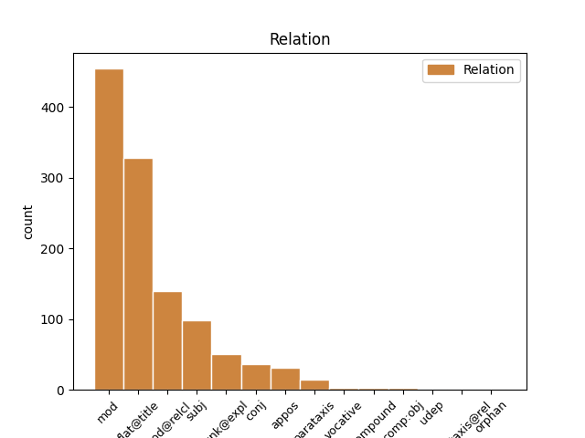

Distribution of features within this leaf


Agreement Rules sorted by frequency.
- When the dependent token is the flat multiword expression(flat@title) of the head token, and the head token is NOUN and the dependent token is PROPN.
1 Особливі _ _ _ _ 0 _ _ _
2 слова _ _ _ _ 0 _ _ _
3 подяки _ _ _ _ 0 _ _ _
4 релігійним _ _ _ _ 0 _ _ _
5 громадам _ _ _ _ 0 _ _ _
6 м _ _ _ _ 0 _ _ _
7 . _ _ _ _ 0 _ _ _
8 Кіцмань _ _ _ _ 0 _ _ _
9 та _ _ _ _ 0 _ _ _
10 с _ _ _ _ 0 _ _ _
11 . _ _ _ _ 0 _ _ _
12 Мамаївці _ _ _ _ 0 _ _ _
13 та _ _ _ _ 0 _ _ _
14 їхнім _ _ _ _ 0 _ _ _
15 настоятелям _ _ _ _ 0 _ _ _
16 - _ _ _ _ 0 _ _ _
17 отцям отець NOUN Ncmpdy Animacy=Anim|Case=Dat|Gender=Masc|Number=Plur 0 _ _ _
18 Юрію Юрій PROPN Npmsdy Animacy=Anim|Case=Dat|Gender=Masc|NameType=Giv|Number=Sing 17 flat@title _ Id=39ez|LTranslit=Jurij|Translit=Juriju
19 ( _ _ _ _ 0 _ _ _
20 Кав'юку _ _ _ _ 0 _ _ _
21 ) _ _ _ _ 0 _ _ _
22 та _ _ _ _ 0 _ _ _
23 Івану _ _ _ _ 0 _ _ _
24 ( _ _ _ _ 0 _ _ _
25 Марковському _ _ _ _ 0 _ _ _
26 ) _ _ _ _ 0 _ _ _
27 , _ _ _ _ 0 _ _ _
28 без _ _ _ _ 0 _ _ _
29 яких _ _ _ _ 0 _ _ _
30 ця _ _ _ _ 0 _ _ _
31 поїздка _ _ _ _ 0 _ _ _
32 була _ _ _ _ 0 _ _ _
33 б _ _ _ _ 0 _ _ _
34 просто _ _ _ _ 0 _ _ _
35 неможливою _ _ _ _ 0 _ _ _
36 . _ _ _ _ 0 _ _ _
1 Вона _ _ _ _ 0 _ _ _
2 виявила _ _ _ _ 0 _ _ _
3 готовність _ _ _ _ 0 _ _ _
4 виплатити _ _ _ _ 0 _ _ _
5 за _ _ _ _ 0 _ _ _
6 93%-й _ _ _ _ 0 _ _ _
7 пакет _ _ _ _ 0 _ _ _
8 акцій акція NOUN Ncfpgn Animacy=Inan|Case=Gen|Gender=Fem|Number=Plur 0 _ _ _
9 « _ _ _ _ 0 _ _ _
10 Криворіжсталі Криворіжсталь PROPN Npfsgn Animacy=Inan|Case=Gen|Gender=Fem|Number=Sing 8 mod _ Id=39lp|LTranslit=Kryvorižstaľ|SpaceAfter=No|Translit=Kryvorižstali
11 » _ _ _ _ 0 _ _ _
12 24 _ _ _ _ 0 _ _ _
13 млрд _ _ _ _ 0 _ _ _
14 . _ _ _ _ 0 _ _ _
15 200 _ _ _ _ 0 _ _ _
16 млн _ _ _ _ 0 _ _ _
17 ₴ _ _ _ _ 0 _ _ _
18 . _ _ _ _ 0 _ _ _
19 ( _ _ _ _ 0 _ _ _
20 4 _ _ _ _ 0 _ _ _
21 , _ _ _ _ 0 _ _ _
22 8 _ _ _ _ 0 _ _ _
23 млрд _ _ _ _ 0 _ _ _
24 доларів _ _ _ _ 0 _ _ _
25 США _ _ _ _ 0 _ _ _
26 ) _ _ _ _ 0 _ _ _
27 , _ _ _ _ 0 _ _ _
28 що _ _ _ _ 0 _ _ _
29 в _ _ _ _ 0 _ _ _
30 2 _ _ _ _ 0 _ _ _
31 , _ _ _ _ 0 _ _ _
32 4 _ _ _ _ 0 _ _ _
33 рази _ _ _ _ 0 _ _ _
34 перевищує _ _ _ _ 0 _ _ _
35 стартову _ _ _ _ 0 _ _ _
36 ціну _ _ _ _ 0 _ _ _
37 і _ _ _ _ 0 _ _ _
38 в _ _ _ _ 0 _ _ _
39 5 _ _ _ _ 0 _ _ _
40 , _ _ _ _ 0 _ _ _
41 7 _ _ _ _ 0 _ _ _
42 рази _ _ _ _ 0 _ _ _
43 — _ _ _ _ 0 _ _ _
44 суму _ _ _ _ 0 _ _ _
45 , _ _ _ _ 0 _ _ _
46 отриману _ _ _ _ 0 _ _ _
47 за _ _ _ _ 0 _ _ _
48 підприємство _ _ _ _ 0 _ _ _
49 2004 _ _ _ _ 0 _ _ _
50 року _ _ _ _ 0 _ _ _
51 . _ _ _ _ 0 _ _ _
1 І _ _ _ _ 0 _ _ _
2 вони _ _ _ _ 0 _ _ _
3 виходили _ _ _ _ 0 _ _ _
4 з _ _ _ _ 0 _ _ _
5 хати _ _ _ _ 0 _ _ _
6 зі _ _ _ _ 0 _ _ _
7 спеченими _ _ _ _ 0 _ _ _
8 обличчями обличчя NOUN Ncnpin Animacy=Inan|Case=Ins|Gender=Neut|Number=Plur 0 _ _ _
9 , _ _ _ _ 0 _ _ _
10 які _ _ _ _ 0 _ _ _
11 сонце _ _ _ _ 0 _ _ _
12 довгі _ _ _ _ 0 _ _ _
13 роки _ _ _ _ 0 _ _ _
14 пражило пражити VERB Vmpis-sn Aspect=Imp|Gender=Neut|Mood=Ind|Number=Sing|Tense=Past|VerbForm=Fin 8 mod@relcl _ Id=39bp|LTranslit=pražyty|SpaceAfter=No|Translit=pražylo
15 ; _ _ _ _ 0 _ _ _
16 воно _ _ _ _ 0 _ _ _
17 й _ _ _ _ 0 _ _ _
18 тепер _ _ _ _ 0 _ _ _
19 зараз _ _ _ _ 0 _ _ _
20 увіссалося _ _ _ _ 0 _ _ _
21 в _ _ _ _ 0 _ _ _
22 них _ _ _ _ 0 _ _ _
23 , _ _ _ _ 0 _ _ _
24 та _ _ _ _ 0 _ _ _
25 й _ _ _ _ 0 _ _ _
26 вони _ _ _ _ 0 _ _ _
27 його _ _ _ _ 0 _ _ _
28 несли _ _ _ _ 0 _ _ _
29 до _ _ _ _ 0 _ _ _
30 своїх _ _ _ _ 0 _ _ _
31 домів _ _ _ _ 0 _ _ _
32 . _ _ _ _ 0 _ _ _
1 Можна _ _ _ _ 0 _ _ _
2 було _ _ _ _ 0 _ _ _
3 сказати _ _ _ _ 0 _ _ _
4 , _ _ _ _ 0 _ _ _
5 що _ _ _ _ 0 _ _ _
6 це це PRON Pd--nnsnn Animacy=Inan|Case=Nom|Gender=Neut|Number=Sing|PronType=Dem 8 subj _ Id=33st|LTranslit=ce|Translit=ce
7 типове _ _ _ _ 0 _ _ _
8 обличчя обличчя NOUN Ncnsnn Animacy=Inan|Case=Nom|Gender=Neut|Number=Sing 0 _ _ _
9 простого _ _ _ _ 0 _ _ _
10 ірландського _ _ _ _ 0 _ _ _
11 рибалки _ _ _ _ 0 _ _ _
12 , _ _ _ _ 0 _ _ _
13 якби _ _ _ _ 0 _ _ _
14 не _ _ _ _ 0 _ _ _
15 блискучі _ _ _ _ 0 _ _ _
16 біноклі _ _ _ _ 0 _ _ _
17 на _ _ _ _ 0 _ _ _
18 носі _ _ _ _ 0 _ _ _
19 , _ _ _ _ 0 _ _ _
20 що _ _ _ _ 0 _ _ _
21 надавали _ _ _ _ 0 _ _ _
22 цьому _ _ _ _ 0 _ _ _
23 добродієві _ _ _ _ 0 _ _ _
24 вигляду _ _ _ _ 0 _ _ _
25 губернатора _ _ _ _ 0 _ _ _
26 або _ _ _ _ 0 _ _ _
27 члена _ _ _ _ 0 _ _ _
28 Конгресу _ _ _ _ 0 _ _ _
29 . _ _ _ _ 0 _ _ _
1 Що _ _ _ _ 0 _ _ _
2 , _ _ _ _ 0 _ _ _
3 наприклад _ _ _ _ 0 _ _ _
4 , _ _ _ _ 0 _ _ _
5 мила _ _ _ _ 0 _ _ _
6 й _ _ _ _ 0 _ _ _
7 безпосередня _ _ _ _ 0 _ _ _
8 журналістка журналістка NOUN Ncfsny Animacy=Anim|Case=Nom|Gender=Fem|Number=Sing 0 _ _ _
9 , _ _ _ _ 0 _ _ _
10 яка _ _ _ _ 0 _ _ _
11 під _ _ _ _ 0 _ _ _
12 час _ _ _ _ 0 _ _ _
13 Майдану _ _ _ _ 0 _ _ _
14 була бути AUX Vapis-sf Aspect=Imp|Gender=Fem|Mood=Ind|Number=Sing|Tense=Past|VerbForm=Fin 8 mod@relcl _ Id=2b5j|LTranslit=buty|Translit=bula
15 ляпнула _ _ _ _ 0 _ _ _
16 мені _ _ _ _ 0 _ _ _
17 в _ _ _ _ 0 _ _ _
18 ефірі _ _ _ _ 0 _ _ _
19 " _ _ _ _ 0 _ _ _
20 Громадського _ _ _ _ 0 _ _ _
21 " _ _ _ _ 0 _ _ _
22 : _ _ _ _ 0 _ _ _
23 " _ _ _ _ 0 _ _ _
24 Шевельов _ _ _ _ 0 _ _ _
25 ? _ _ _ _ 0 _ _ _
26 Так _ _ _ _ 0 _ _ _
27 він _ _ _ _ 0 _ _ _
28 же _ _ _ _ 0 _ _ _
29 нацистський _ _ _ _ 0 _ _ _
30 колаборант _ _ _ _ 0 _ _ _
31 ! _ _ _ _ 0 _ _ _
32 " _ _ _ _ 0 _ _ _
33 , _ _ _ _ 0 _ _ _
34 - _ _ _ _ 0 _ _ _
35 не _ _ _ _ 0 _ _ _
36 " _ _ _ _ 0 _ _ _
37 темник _ _ _ _ 0 _ _ _
38 " _ _ _ _ 0 _ _ _
39 від _ _ _ _ 0 _ _ _
40 ФСБ _ _ _ _ 0 _ _ _
41 слідом _ _ _ _ 0 _ _ _
42 за _ _ _ _ 0 _ _ _
43 Добкіним _ _ _ _ 0 _ _ _
44 озвучувала _ _ _ _ 0 _ _ _
45 , _ _ _ _ 0 _ _ _
46 а _ _ _ _ 0 _ _ _
47 просто _ _ _ _ 0 _ _ _
48 " _ _ _ _ 0 _ _ _
49 на _ _ _ _ 0 _ _ _
50 автоматі _ _ _ _ 0 _ _ _
51 " _ _ _ _ 0 _ _ _
52 , _ _ _ _ 0 _ _ _
53 як _ _ _ _ 0 _ _ _
54 німфа _ _ _ _ 0 _ _ _
55 Ехо _ _ _ _ 0 _ _ _
56 , _ _ _ _ 0 _ _ _
57 повторила _ _ _ _ 0 _ _ _
58 те _ _ _ _ 0 _ _ _
59 , _ _ _ _ 0 _ _ _
60 що _ _ _ _ 0 _ _ _
61 найголосніше _ _ _ _ 0 _ _ _
62 в _ _ _ _ 0 _ _ _
63 ефірах _ _ _ _ 0 _ _ _
64 про _ _ _ _ 0 _ _ _
65 Шевельова _ _ _ _ 0 _ _ _
66 звучало _ _ _ _ 0 _ _ _
67 ( _ _ _ _ 0 _ _ _
68 чула _ _ _ _ 0 _ _ _
69 дзвін _ _ _ _ 0 _ _ _
70 ! _ _ _ _ 0 _ _ _
71 ) _ _ _ _ 0 _ _ _
72 . _ _ _ _ 0 _ _ _
1 Його він PRON Pp-3m-sgn Case=Gen|Gender=Masc|Number=Sing|Person=3|PronType=Prs 2 mod _ Id=39l6|LTranslit=vin|Translit=Joho
2 переможцем переможець NOUN Ncmsiy Animacy=Anim|Case=Ins|Gender=Masc|Number=Sing 0 _ _ _
3 визнали _ _ _ _ 0 _ _ _
4 компанію _ _ _ _ 0 _ _ _
5 Mittal _ _ _ _ 0 _ _ _
6 Steel _ _ _ _ 0 _ _ _
7 Germany _ _ _ _ 0 _ _ _
8 GmbH _ _ _ _ 0 _ _ _
9 . _ _ _ _ 0 _ _ _
1 А _ _ _ _ 0 _ _ _
2 Волтер Волтер PROPN Npmsny Animacy=Anim|Case=Nom|Gender=Masc|NameType=Sur|Number=Sing 7 subj _ Id=2pw9|LTranslit=Volter|Translit=Volter
3 - _ _ _ _ 0 _ _ _
4 це _ _ _ _ 0 _ _ _
5 не _ _ _ _ 0 _ _ _
6 просто _ _ _ _ 0 _ _ _
7 чарівник чарівник NOUN Ncmsny Animacy=Anim|Case=Nom|Gender=Masc|Number=Sing 0 _ _ _
8 в _ _ _ _ 0 _ _ _
9 чорній _ _ _ _ 0 _ _ _
10 сорочці _ _ _ _ 0 _ _ _
11 і _ _ _ _ 0 _ _ _
12 з _ _ _ _ 0 _ _ _
13 усім _ _ _ _ 0 _ _ _
14 цим _ _ _ _ 0 _ _ _
15 набором _ _ _ _ 0 _ _ _
16 магічних _ _ _ _ 0 _ _ _
17 фетишів _ _ _ _ 0 _ _ _
18 , _ _ _ _ 0 _ _ _
19 які _ _ _ _ 0 _ _ _
20 вони _ _ _ _ 0 _ _ _
21 понапозичали _ _ _ _ 0 _ _ _
22 з _ _ _ _ 0 _ _ _
23 серіалів _ _ _ _ 0 _ _ _
24 про _ _ _ _ 0 _ _ _
25 чародійок _ _ _ _ 0 _ _ _
26 . _ _ _ _ 0 _ _ _
1 Група _ _ _ _ 0 _ _ _
2 компаній _ _ _ _ 0 _ _ _
3 « _ _ _ _ 0 _ _ _
4 Ензим _ _ _ _ 0 _ _ _
5 » _ _ _ _ 0 _ _ _
6 — _ _ _ _ 0 _ _ _
7 це це PRON Pd--nnsnn Animacy=Inan|Case=Nom|Gender=Neut|Number=Sing|PronType=Dem 13 unk@expl _ Id=289p|LTranslit=ce|Translit=ce
8 єдине _ _ _ _ 0 _ _ _
9 в _ _ _ _ 0 _ _ _
10 Україні _ _ _ _ 0 _ _ _
11 велике _ _ _ _ 0 _ _ _
12 промислове _ _ _ _ 0 _ _ _
13 підприємство підприємство NOUN Ncnsnn Animacy=Inan|Case=Nom|Gender=Neut|Number=Sing 0 _ _ _
14 з _ _ _ _ 0 _ _ _
15 виробництва _ _ _ _ 0 _ _ _
16 біотехнологічної _ _ _ _ 0 _ _ _
17 продукції _ _ _ _ 0 _ _ _
18 за _ _ _ _ 0 _ _ _
19 допомогою _ _ _ _ 0 _ _ _
20 мікробного _ _ _ _ 0 _ _ _
21 синтезу _ _ _ _ 0 _ _ _
22 . _ _ _ _ 0 _ _ _
1 Якщо _ _ _ _ 0 _ _ _
2 протягом _ _ _ _ 0 _ _ _
3 трьох _ _ _ _ 0 _ _ _
4 років _ _ _ _ 0 _ _ _
5 колишній _ _ _ _ 0 _ _ _
6 власник _ _ _ _ 0 _ _ _
7 транспортного _ _ _ _ 0 _ _ _
8 засобу _ _ _ _ 0 _ _ _
9 не _ _ _ _ 0 _ _ _
10 вимагатиме _ _ _ _ 0 _ _ _
11 передання _ _ _ _ 0 _ _ _
12 йому _ _ _ _ 0 _ _ _
13 суми _ _ _ _ 0 _ _ _
14 виторгу _ _ _ _ 0 _ _ _
15 , _ _ _ _ 0 _ _ _
16 ця _ _ _ _ 0 _ _ _
17 сума _ _ _ _ 0 _ _ _
18 переходить _ _ _ _ 0 _ _ _
19 у _ _ _ _ 0 _ _ _
20 власність _ _ _ _ 0 _ _ _
21 територіальної _ _ _ _ 0 _ _ _
22 громади _ _ _ _ 0 _ _ _
23 , _ _ _ _ 0 _ _ _
24 на _ _ _ _ 0 _ _ _
25 території територія NOUN Ncfsln Animacy=Inan|Case=Loc|Gender=Fem|Number=Sing 0 _ _ _
26 якої який DET Pr--f-sga Case=Gen|Gender=Fem|Number=Sing|PronType=Rel 25 mod _ Id=2e9j|LTranslit=jakyj|Translit=jakoji
27 було _ _ _ _ 0 _ _ _
28 знайдено _ _ _ _ 0 _ _ _
29 транспортний _ _ _ _ 0 _ _ _
30 засіб _ _ _ _ 0 _ _ _
31 . _ _ _ _ 0 _ _ _
1 До _ _ _ _ 0 _ _ _
2 того _ _ _ _ 0 _ _ _
3 ж _ _ _ _ 0 _ _ _
4 , _ _ _ _ 0 _ _ _
5 за _ _ _ _ 0 _ _ _
6 висновками _ _ _ _ 0 _ _ _
7 наших _ _ _ _ 0 _ _ _
8 партнерів _ _ _ _ 0 _ _ _
9 - _ _ _ _ 0 _ _ _
10 хіміків _ _ _ _ 0 _ _ _
11 із _ _ _ _ 0 _ _ _
12 Національного _ _ _ _ 0 _ _ _
13 науково _ _ _ _ 0 _ _ _
14 - _ _ _ _ 0 _ _ _
15 дослідного _ _ _ _ 0 _ _ _
16 реставраційного _ _ _ _ 0 _ _ _
17 центру _ _ _ _ 0 _ _ _
18 України _ _ _ _ 0 _ _ _
19 та _ _ _ _ 0 _ _ _
20 бюро _ _ _ _ 0 _ _ _
21 технічної _ _ _ _ 0 _ _ _
22 експертизи _ _ _ _ 0 _ _ _
23 « _ _ _ _ 0 _ _ _
24 Артлаб _ _ _ _ 0 _ _ _
25 » _ _ _ _ 0 _ _ _
26 , _ _ _ _ 0 _ _ _
27 пігменти _ _ _ _ 0 _ _ _
28 , _ _ _ _ 0 _ _ _
29 застосовані _ _ _ _ 0 _ _ _
30 у _ _ _ _ 0 _ _ _
31 фарбах _ _ _ _ 0 _ _ _
32 , _ _ _ _ 0 _ _ _
33 на _ _ _ _ 0 _ _ _
34 всіх _ _ _ _ 0 _ _ _
35 трьох _ _ _ _ 0 _ _ _
36 частинах _ _ _ _ 0 _ _ _
37 « _ _ _ _ 0 _ _ _
38 Спокуси _ _ _ _ 0 _ _ _
39 св _ _ _ _ 0 _ _ _
40 . _ _ _ _ 0 _ _ _
41 Антонія _ _ _ _ 0 _ _ _
42 » _ _ _ _ 0 _ _ _
43 виявилися _ _ _ _ 0 _ _ _
44 автентичними _ _ _ _ 0 _ _ _
45 : _ _ _ _ 0 _ _ _
46 кістяна _ _ _ _ 0 _ _ _
47 чорна _ _ _ _ 0 _ _ _
48 , _ _ _ _ 0 _ _ _
49 азурит _ _ _ _ 0 _ _ _
50 , _ _ _ _ 0 _ _ _
51 натуральний _ _ _ _ 0 _ _ _
52 ультрамарин _ _ _ _ 0 _ _ _
53 , _ _ _ _ 0 _ _ _
54 малахіт _ _ _ _ 0 _ _ _
55 і _ _ _ _ 0 _ _ _
56 кіновар _ _ _ _ 0 _ _ _
57 — _ _ _ _ 0 _ _ _
58 той _ _ _ _ 0 _ _ _
59 самий _ _ _ _ 0 _ _ _
60 обмежений _ _ _ _ 0 _ _ _
61 репертуар _ _ _ _ 0 _ _ _
62 , _ _ _ _ 0 _ _ _
63 що _ _ _ _ 0 _ _ _
64 був _ _ _ _ 0 _ _ _
65 доступний _ _ _ _ 0 _ _ _
66 живописцям живописець NOUN Ncmpdy Animacy=Anim|Case=Dat|Gender=Masc|Number=Plur 0 _ _ _
67 XV _ _ _ _ 0 _ _ _
68 – _ _ _ _ 0 _ _ _
69 XVI _ _ _ _ 0 _ _ _
70 століття _ _ _ _ 0 _ _ _
71 , _ _ _ _ 0 _ _ _
72 зокрема _ _ _ _ 0 _ _ _
73 Ієронімусові Ієронімус PROPN Npmsdy Animacy=Anim|Case=Dat|Gender=Masc|NameType=Giv|Number=Sing 66 appos _ Id=281f|LTranslit=Iěronimus|Translit=Iěronimusovi
74 Босху _ _ _ _ 0 _ _ _
75 та _ _ _ _ 0 _ _ _
76 його _ _ _ _ 0 _ _ _
77 помічникам _ _ _ _ 0 _ _ _
78 . _ _ _ _ 0 _ _ _
1 Таким _ _ _ _ 0 _ _ _
2 є _ _ _ _ 0 _ _ _
3 запит _ _ _ _ 0 _ _ _
4 на _ _ _ _ 0 _ _ _
5 ознайомлення _ _ _ _ 0 _ _ _
6 з _ _ _ _ 0 _ _ _
7 містобудівними _ _ _ _ 0 _ _ _
8 умовами _ _ _ _ 0 _ _ _
9 і _ _ _ _ 0 _ _ _
10 обмеженнями _ _ _ _ 0 _ _ _
11 , _ _ _ _ 0 _ _ _
12 що _ _ _ _ 0 _ _ _
13 надавалися _ _ _ _ 0 _ _ _
14 вже _ _ _ _ 0 _ _ _
15 на _ _ _ _ 0 _ _ _
16 збудовані _ _ _ _ 0 _ _ _
17 об’єкти _ _ _ _ 0 _ _ _
18 — _ _ _ _ 0 _ _ _
19 багатоповерхівки _ _ _ _ 0 _ _ _
20 по _ _ _ _ 0 _ _ _
21 вул _ _ _ _ 0 _ _ _
22 . _ _ _ _ 0 _ _ _
23 Чорновола _ _ _ _ 0 _ _ _
24 9 _ _ _ _ 0 _ _ _
25 , _ _ _ _ 0 _ _ _
26 11 _ _ _ _ 0 _ _ _
27 , _ _ _ _ 0 _ _ _
28 15 _ _ _ _ 0 _ _ _
29 ; _ _ _ _ 0 _ _ _
30 торгові _ _ _ _ 0 _ _ _
31 комплекси _ _ _ _ 0 _ _ _
32 « _ _ _ _ 0 _ _ _
33 Олді _ _ _ _ 0 _ _ _
34 » _ _ _ _ 0 _ _ _
35 , _ _ _ _ 0 _ _ _
36 « _ _ _ _ 0 _ _ _
37 Епіцентр епіцентр NOUN Ncmsnn Animacy=Inan|Case=Nom|Gender=Masc|Number=Sing 0 _ _ _
38 » _ _ _ _ 0 _ _ _
39 , _ _ _ _ 0 _ _ _
40 « _ _ _ _ 0 _ _ _
41 Новус Новус PROPN Npmsnn Animacy=Inan|Case=Nom|Gender=Masc|Number=Sing 37 conj _ Id=2qd4|LTranslit=Novus|SpaceAfter=No|Translit=Novus
42 » _ _ _ _ 0 _ _ _
43 та _ _ _ _ 0 _ _ _
44 ті _ _ _ _ 0 _ _ _
45 , _ _ _ _ 0 _ _ _
46 що _ _ _ _ 0 _ _ _
47 зводяться _ _ _ _ 0 _ _ _
48 по _ _ _ _ 0 _ _ _
49 вул _ _ _ _ 0 _ _ _
50 . _ _ _ _ 0 _ _ _
51 Київській _ _ _ _ 0 _ _ _
52 . _ _ _ _ 0 _ _ _
1 Маю _ _ _ _ 0 _ _ _
2 диплом диплом NOUN Ncmsan Animacy=Inan|Case=Acc|Gender=Masc|Number=Sing 0 _ _ _
3 біолога _ _ _ _ 0 _ _ _
4 , _ _ _ _ 0 _ _ _
5 4 _ _ _ _ 0 _ _ _
6 курси _ _ _ _ 0 _ _ _
7 провчився провчитися VERB Vmeis-sm Aspect=Perf|Gender=Masc|Mood=Ind|Number=Sing|Tense=Past|VerbForm=Fin 2 parataxis _ Id=2cjv|LTranslit=provčytyśа|Translit=provčyvśа
8 на _ _ _ _ 0 _ _ _
9 філологічному _ _ _ _ 0 _ _ _
10 ... _ _ _ _ 0 _ _ _
1 Я _ _ _ _ 0 _ _ _
2 фреш фреш NOUN Ncmsny Animacy=Anim|Case=Nom|Gender=Masc|Number=Sing 0 _ _ _
3 , _ _ _ _ 0 _ _ _
4 але _ _ _ _ 0 _ _ _
5 вже _ _ _ _ 0 _ _ _
6 прочитав прочитати VERB Vmeis-sm Aspect=Perf|Gender=Masc|Mood=Ind|Number=Sing|Tense=Past|VerbForm=Fin 2 conj _ Id=2il5|LTranslit=pročytaty|SpaceAfter=No|Translit=pročytav
7 , _ _ _ _ 0 _ _ _
8 що _ _ _ _ 0 _ _ _
9 за _ _ _ _ 0 _ _ _
10 одну _ _ _ _ 0 _ _ _
11 " _ _ _ _ 0 _ _ _
12 двійку _ _ _ _ 0 _ _ _
13 " _ _ _ _ 0 _ _ _
14 виганяють _ _ _ _ 0 _ _ _
15 . _ _ _ _ 0 _ _ _
1 Сукня _ _ _ _ 0 _ _ _
2 - _ _ _ _ 0 _ _ _
3 кардиган _ _ _ _ 0 _ _ _
4 оздоблена _ _ _ _ 0 _ _ _
5 монохромною _ _ _ _ 0 _ _ _
6 вишивкою _ _ _ _ 0 _ _ _
7 : _ _ _ _ 0 _ _ _
8 геометричний _ _ _ _ 0 _ _ _
9 орнамент _ _ _ _ 0 _ _ _
10 створений _ _ _ _ 0 _ _ _
11 на _ _ _ _ 0 _ _ _
12 основі _ _ _ _ 0 _ _ _
13 квадратів квадрат NOUN Ncmpgn Animacy=Inan|Case=Gen|Gender=Masc|Number=Plur 0 _ _ _
14 - _ _ _ _ 0 _ _ _
15 одного один DET Pi--m-sga Case=Gen|Gender=Masc|Number=Sing|PronType=Ind 13 appos _ Id=2pn8|LTranslit=odyn|Promoted=Yes|Translit=odnoho
16 із _ _ _ _ 0 _ _ _
17 символів _ _ _ _ 0 _ _ _
18 землі _ _ _ _ 0 _ _ _
19 , _ _ _ _ 0 _ _ _
20 миру _ _ _ _ 0 _ _ _
21 та _ _ _ _ 0 _ _ _
22 достатку _ _ _ _ 0 _ _ _
23 ; _ _ _ _ 0 _ _ _
24 рослинний _ _ _ _ 0 _ _ _
25 - _ _ _ _ 0 _ _ _
26 варіація _ _ _ _ 0 _ _ _
27 на _ _ _ _ 0 _ _ _
28 тему _ _ _ _ 0 _ _ _
29 квітки _ _ _ _ 0 _ _ _
30 Берегині _ _ _ _ 0 _ _ _
31 , _ _ _ _ 0 _ _ _
32 символу _ _ _ _ 0 _ _ _
33 жінки _ _ _ _ 0 _ _ _
34 - _ _ _ _ 0 _ _ _
35 матері _ _ _ _ 0 _ _ _
36 і _ _ _ _ 0 _ _ _
37 самого _ _ _ _ 0 _ _ _
38 Дерева _ _ _ _ 0 _ _ _
39 Життя _ _ _ _ 0 _ _ _
40 . _ _ _ _ 0 _ _ _
1 Чи _ _ _ _ 0 _ _ _
2 будуть _ _ _ _ 0 _ _ _
3 там _ _ _ _ 0 _ _ _
4 слова _ _ _ _ 0 _ _ _
5 : _ _ _ _ 0 _ _ _
6 « _ _ _ _ 0 _ _ _
7 Людськості _ _ _ _ 0 _ _ _
8 престол престол NOUN Ncmsnn Animacy=Inan|Case=Nom|Gender=Masc|Number=Sing 0 _ _ _
9 і _ _ _ _ 0 _ _ _
10 кожен кожний DET Pg--m-sna Case=Nom|Gender=Masc|Number=Sing|PronType=Tot|Variant=Short 8 conj _ Id=1k0q|LTranslit=kožnyj|Translit=kožen
11 як _ _ _ _ 0 _ _ _
12 апостол _ _ _ _ 0 _ _ _
13 » _ _ _ _ 0 _ _ _
14 ? _ _ _ _ 0 _ _ _
1 Майкл Майкл PROPN Npmsny Animacy=Anim|Case=Nom|Gender=Masc|NameType=Giv|Number=Sing 2 vocative _ Id=1om5|LTranslit=Majkl|Translit=Majkl
2 уклін уклін NOUN Ncmsnn Animacy=Inan|Case=Nom|Gender=Masc|Number=Sing 0 _ _ _
3 тобі _ _ _ _ 0 _ _ _
4 ))) _ _ _ _ 0 _ _ _
1 Щодо _ _ _ _ 0 _ _ _
2 цього _ _ _ _ 0 _ _ _
3 є _ _ _ _ 0 _ _ _
4 гарна _ _ _ _ 0 _ _ _
5 приказка _ _ _ _ 0 _ _ _
6 : _ _ _ _ 0 _ _ _
7 " _ _ _ _ 0 _ _ _
8 На _ _ _ _ 0 _ _ _
9 колір _ _ _ _ 0 _ _ _
10 і _ _ _ _ 0 _ _ _
11 смак _ _ _ _ 0 _ _ _
12 товариш товариш NOUN Ncmsny Animacy=Anim|Case=Nom|Gender=Masc|Number=Sing 0 _ _ _
13 не _ _ _ _ 0 _ _ _
14 всяк всякий DET Pg--m-sna Case=Nom|Gender=Masc|Number=Sing|PronType=Tot|Variant=Short 12 subj _ Id=2oyo|LTranslit=vśаkyj|SpaceAfter=No|Translit=vśаk
15 " _ _ _ _ 0 _ _ _
16 . _ _ _ _ 0 _ _ _
1 Вітайте _ _ _ _ 0 _ _ _
2 Сосюру _ _ _ _ 0 _ _ _
3 ; _ _ _ _ 0 _ _ _
4 низенький _ _ _ _ 0 _ _ _
5 уклін уклін NOUN Ncmsnn Animacy=Inan|Case=Nom|Gender=Masc|Number=Sing 0 _ _ _
6 Хвильовому Хвильовий PROPN Npmsdy Animacy=Anim|Case=Dat|Gender=Masc|NameType=Sur|Number=Sing 5 comp:obj _ Id=1ke2|LTranslit=Chvyľovyj|Translit=Chvyľovomu
7 ( _ _ _ _ 0 _ _ _
8 хай _ _ _ _ 0 _ _ _
9 їде _ _ _ _ 0 _ _ _
10 з _ _ _ _ 0 _ _ _
11 Харкова _ _ _ _ 0 _ _ _
12 ! _ _ _ _ 0 _ _ _
13 ) _ _ _ _ 0 _ _ _
14 і _ _ _ _ 0 _ _ _
15 побажання _ _ _ _ 0 _ _ _
16 всього _ _ _ _ 0 _ _ _
17 найкращого _ _ _ _ 0 _ _ _
18 Вам _ _ _ _ 0 _ _ _
19 — _ _ _ _ 0 _ _ _
1 Дівчина _ _ _ _ 0 _ _ _
2 була _ _ _ _ 0 _ _ _
3 , _ _ _ _ 0 _ _ _
4 немає _ _ _ _ 0 _ _ _
5 де _ _ _ _ 0 _ _ _
6 правди _ _ _ _ 0 _ _ _
7 діти _ _ _ _ 0 _ _ _
8 , _ _ _ _ 0 _ _ _
9 негарна _ _ _ _ 0 _ _ _
10 : _ _ _ _ 0 _ _ _
11 вища _ _ _ _ 0 _ _ _
12 від _ _ _ _ 0 _ _ _
13 нього _ _ _ _ 0 _ _ _
14 , _ _ _ _ 0 _ _ _
15 що _ _ _ _ 0 _ _ _
16 на _ _ _ _ 0 _ _ _
17 той _ _ _ _ 0 _ _ _
18 час _ _ _ _ 0 _ _ _
19 зачіпало _ _ _ _ 0 _ _ _
20 його _ _ _ _ 0 _ _ _
21 мужську _ _ _ _ 0 _ _ _
22 гідність _ _ _ _ 0 _ _ _
23 , _ _ _ _ 0 _ _ _
24 з _ _ _ _ 0 _ _ _
25 надто _ _ _ _ 0 _ _ _
26 довгим _ _ _ _ 0 _ _ _
27 лицем _ _ _ _ 0 _ _ _
28 і _ _ _ _ 0 _ _ _
29 товстими _ _ _ _ 0 _ _ _
30 губами _ _ _ _ 0 _ _ _
31 , _ _ _ _ 0 _ _ _
32 ходила _ _ _ _ 0 _ _ _
33 , _ _ _ _ 0 _ _ _
34 — _ _ _ _ 0 _ _ _
35 тепер _ _ _ _ 0 _ _ _
36 уже _ _ _ _ 0 _ _ _
37 ні _ _ _ _ 0 _ _ _
38 , _ _ _ _ 0 _ _ _
39 але _ _ _ _ 0 _ _ _
40 в _ _ _ _ 0 _ _ _
41 молодості молодість NOUN Ncfsln Animacy=Inan|Case=Loc|Gender=Fem|Number=Sing 0 _ _ _
42 , _ _ _ _ 0 _ _ _
43 коли _ _ _ _ 0 _ _ _
44 ще _ _ _ _ 0 _ _ _
45 мала мати VERB Vmpis-sf Aspect=Imp|Gender=Fem|Mood=Ind|Number=Sing|Tense=Past|VerbForm=Fin 41 appos _ Id=3a7m|LTranslit=maty|Translit=mala
46 багато _ _ _ _ 0 _ _ _
47 невижитої _ _ _ _ 0 _ _ _
48 сили _ _ _ _ 0 _ _ _
49 , _ _ _ _ 0 _ _ _
50 — _ _ _ _ 0 _ _ _
51 чисто _ _ _ _ 0 _ _ _
52 по-чоловічому _ _ _ _ 0 _ _ _
53 . _ _ _ _ 0 _ _ _
1 Мєдвєдєв _ _ _ _ 0 _ _ _
2 співав _ _ _ _ 0 _ _ _
3 « _ _ _ _ 0 _ _ _
4 Гетьмани _ _ _ _ 0 _ _ _
5 » _ _ _ _ 0 _ _ _
6 , _ _ _ _ 0 _ _ _
7 « _ _ _ _ 0 _ _ _
8 Олесю _ _ _ _ 0 _ _ _
9 » _ _ _ _ 0 _ _ _
10 , _ _ _ _ 0 _ _ _
11 « _ _ _ _ 0 _ _ _
12 Дощик _ _ _ _ 0 _ _ _
13 » _ _ _ _ 0 _ _ _
14 , _ _ _ _ 0 _ _ _
15 хор _ _ _ _ 0 _ _ _
16 співав _ _ _ _ 0 _ _ _
17 « _ _ _ _ 0 _ _ _
18 Гей _ _ _ _ 0 _ _ _
19 не _ _ _ _ 0 _ _ _
20 дивуйте _ _ _ _ 0 _ _ _
21 » _ _ _ _ 0 _ _ _
22 , _ _ _ _ 0 _ _ _
23 співачка співачка NOUN Ncfsny Animacy=Anim|Case=Nom|Gender=Fem|Number=Sing 0 _ _ _
24 Снарская Снарская X X Animacy=Anim|Case=Nom|Foreign=Yes|Gender=Fem|Number=Sing 23 flat@title _ Id=00x5|LTranslit=Snarskaja|Translit=Snarskaja
25 ( _ _ _ _ 0 _ _ _
26 наша _ _ _ _ 0 _ _ _
27 волинячка _ _ _ _ 0 _ _ _
28 ) _ _ _ _ 0 _ _ _
29 – _ _ _ _ 0 _ _ _
30 « _ _ _ _ 0 _ _ _
31 Чом _ _ _ _ 0 _ _ _
32 , _ _ _ _ 0 _ _ _
33 чом _ _ _ _ 0 _ _ _
34 чорнобров _ _ _ _ 0 _ _ _
35 » _ _ _ _ 0 _ _ _
36 , _ _ _ _ 0 _ _ _
37 а _ _ _ _ 0 _ _ _
38 в _ _ _ _ 0 _ _ _
39 самому _ _ _ _ 0 _ _ _
40 кінці _ _ _ _ 0 _ _ _
41 хор _ _ _ _ 0 _ _ _
42 утяв _ _ _ _ 0 _ _ _
43 « _ _ _ _ 0 _ _ _
44 Српиjа _ _ _ _ 0 _ _ _
45 свободна _ _ _ _ 0 _ _ _
46 » _ _ _ _ 0 _ _ _
47 ( _ _ _ _ 0 _ _ _
48 « _ _ _ _ 0 _ _ _
49 Ще _ _ _ _ 0 _ _ _
50 не _ _ _ _ 0 _ _ _
51 вмерла _ _ _ _ 0 _ _ _
52 Україна _ _ _ _ 0 _ _ _
53 » _ _ _ _ 0 _ _ _
54 ) _ _ _ _ 0 _ _ _
55 . _ _ _ _ 0 _ _ _
1 Матеріял матеріял NOUN Ncmsnn Animacy=Inan|Case=Nom|Gender=Masc|Number=Sing|Orth=Alt 0 _ _ _
2 з _ _ _ _ 0 _ _ _
3 Вінчі _ _ _ _ 0 _ _ _
4 та _ _ _ _ 0 _ _ _
5 інших _ _ _ _ 0 _ _ _
6 селищ _ _ _ _ 0 _ _ _
7 цього _ _ _ _ 0 _ _ _
8 ступня _ _ _ _ 0 _ _ _
9 , _ _ _ _ 0 _ _ _
10 який _ _ _ _ 0 _ _ _
11 я _ _ _ _ 0 _ _ _
12 мав мати VERB Vmpis-sm Aspect=Imp|Gender=Masc|Mood=Ind|Number=Sing|Tense=Past|VerbForm=Fin 1 mod _ Id=2t9a|LTranslit=maty|Translit=mav
13 змогу _ _ _ _ 0 _ _ _
14 бачити _ _ _ _ 0 _ _ _
15 в _ _ _ _ 0 _ _ _
16 музеях _ _ _ _ 0 _ _ _
17 Югославії _ _ _ _ 0 _ _ _
18 , _ _ _ _ 0 _ _ _
19 знов _ _ _ _ 0 _ _ _
20 дає _ _ _ _ 0 _ _ _
21 дані _ _ _ _ 0 _ _ _
22 щодо _ _ _ _ 0 _ _ _
23 техніки _ _ _ _ 0 _ _ _
24 посуду _ _ _ _ 0 _ _ _
25 на _ _ _ _ 0 _ _ _
26 ніжці _ _ _ _ 0 _ _ _
27 в _ _ _ _ 0 _ _ _
28 цій _ _ _ _ 0 _ _ _
29 групі _ _ _ _ 0 _ _ _
30 зокрема _ _ _ _ 0 _ _ _
31 знаних _ _ _ _ 0 _ _ _
32 вінчанських _ _ _ _ 0 _ _ _
33 мисок _ _ _ _ 0 _ _ _
34 на _ _ _ _ 0 _ _ _
35 високій _ _ _ _ 0 _ _ _
36 масивній _ _ _ _ 0 _ _ _
37 ніжці _ _ _ _ 0 _ _ _
38 , _ _ _ _ 0 _ _ _
39 уважаних _ _ _ _ 0 _ _ _
40 за _ _ _ _ 0 _ _ _
41 специфічну _ _ _ _ 0 _ _ _
42 форму _ _ _ _ 0 _ _ _
43 югославської _ _ _ _ 0 _ _ _
44 кераміки _ _ _ _ 0 _ _ _
45 , _ _ _ _ 0 _ _ _
46 яка _ _ _ _ 0 _ _ _
47 відділяє _ _ _ _ 0 _ _ _
48 її _ _ _ _ 0 _ _ _
49 від _ _ _ _ 0 _ _ _
50 решти _ _ _ _ 0 _ _ _
51 подунайського _ _ _ _ 0 _ _ _
52 неоліту _ _ _ _ 0 _ _ _
53 та _ _ _ _ 0 _ _ _
54 в’яже _ _ _ _ 0 _ _ _
55 з _ _ _ _ 0 _ _ _
56 Анатолією _ _ _ _ 0 _ _ _
57 . _ _ _ _ 0 _ _ _
1 Ніжне _ _ _ _ 0 _ _ _
2 дрібненьке _ _ _ _ 0 _ _ _
3 квоктання квоктання NOUN Ncnsnn Animacy=Inan|Case=Nom|Gender=Neut|Number=Sing 0 _ _ _
4 , _ _ _ _ 0 _ _ _
5 щось щось PRON Pi--nnsnn Animacy=Inan|Case=Nom|Gender=Neut|Number=Sing|PronType=Ind 3 appos _ Id=2ufx|LTranslit=ščoś|Translit=ščoś
6 наче _ _ _ _ 0 _ _ _
7 : _ _ _ _ 0 _ _ _
8 " _ _ _ _ 0 _ _ _
9 так _ _ _ _ 0 _ _ _
10 , _ _ _ _ 0 _ _ _
11 так _ _ _ _ 0 _ _ _
12 , _ _ _ _ 0 _ _ _
13 так _ _ _ _ 0 _ _ _
14 , _ _ _ _ 0 _ _ _
15 так _ _ _ _ 0 _ _ _
16 , _ _ _ _ 0 _ _ _
17 так _ _ _ _ 0 _ _ _
18 " _ _ _ _ 0 _ _ _
19 , _ _ _ _ 0 _ _ _
20 що _ _ _ _ 0 _ _ _
21 його _ _ _ _ 0 _ _ _
22 вона _ _ _ _ 0 _ _ _
23 ще _ _ _ _ 0 _ _ _
24 в _ _ _ _ 0 _ _ _
25 дитинстві _ _ _ _ 0 _ _ _
26 чула _ _ _ _ 0 _ _ _
27 від _ _ _ _ 0 _ _ _
28 своєї _ _ _ _ 0 _ _ _
29 матері _ _ _ _ 0 _ _ _
30 , _ _ _ _ 0 _ _ _
31 тепер _ _ _ _ 0 _ _ _
32 само _ _ _ _ 0 _ _ _
33 з'явилося _ _ _ _ 0 _ _ _
34 на _ _ _ _ 0 _ _ _
35 язиці _ _ _ _ 0 _ _ _
36 . _ _ _ _ 0 _ _ _
1 Врешті _ _ _ _ 0 _ _ _
2 якась _ _ _ _ 0 _ _ _
3 комісія _ _ _ _ 0 _ _ _
4 з _ _ _ _ 0 _ _ _
5 Києва _ _ _ _ 0 _ _ _
6 виявила _ _ _ _ 0 _ _ _
7 , _ _ _ _ 0 _ _ _
8 що _ _ _ _ 0 _ _ _
9 засуджений засуджений NOUN Ap-msnf- Animacy=Anim|Case=Nom|Gender=Masc|Number=Sing 0 _ _ _
10 такий такий DET Pd--m-sna Case=Nom|Gender=Masc|Number=Sing|PronType=Dem 9 flat@title _ Id=2elw|LTranslit=takyj|SpaceAfter=No|Translit=takyj
11 - _ _ _ _ 0 _ _ _
12 то _ _ _ _ 0 _ _ _
13 все _ _ _ _ 0 _ _ _
14 ще _ _ _ _ 0 _ _ _
15 числиться _ _ _ _ 0 _ _ _
16 за _ _ _ _ 0 _ _ _
17 місцевим _ _ _ _ 0 _ _ _
18 слідчим _ _ _ _ 0 _ _ _
19 ізолятором _ _ _ _ 0 _ _ _
20 , _ _ _ _ 0 _ _ _
21 хоча _ _ _ _ 0 _ _ _
22 йому _ _ _ _ 0 _ _ _
23 цілком _ _ _ _ 0 _ _ _
24 виважено _ _ _ _ 0 _ _ _
25 призначено _ _ _ _ 0 _ _ _
26 перебувати _ _ _ _ 0 _ _ _
27 у _ _ _ _ 0 _ _ _
28 східних _ _ _ _ 0 _ _ _
29 областях _ _ _ _ 0 _ _ _
30 Радянського _ _ _ _ 0 _ _ _
31 союзу _ _ _ _ 0 _ _ _
32 . _ _ _ _ 0 _ _ _
1 Джон _ _ _ _ 0 _ _ _
2 почав _ _ _ _ 0 _ _ _
3 істерику _ _ _ _ 0 _ _ _
4 — _ _ _ _ 0 _ _ _
5 ю _ _ _ _ 0 _ _ _
6 , _ _ _ _ 0 _ _ _
7 факінґ факінґ X X Case=Nom|Foreign=Yes|Gender=Masc|Number=Sing|Uninflect=Yes 8 mod _ Id=0u3a|LTranslit=faking|Translit=faking
8 лама лама NOUN Ncmsny Animacy=Anim|Case=Nom|Gender=Masc|Number=Sing 0 _ _ _
9 , _ _ _ _ 0 _ _ _
10 я _ _ _ _ 0 _ _ _
11 приперся _ _ _ _ 0 _ _ _
12 аж _ _ _ _ 0 _ _ _
13 сюди _ _ _ _ 0 _ _ _
14 , _ _ _ _ 0 _ _ _
15 вичекав _ _ _ _ 0 _ _ _
16 кілька _ _ _ _ 0 _ _ _
17 годин _ _ _ _ 0 _ _ _
18 перед _ _ _ _ 0 _ _ _
19 твоїми _ _ _ _ 0 _ _ _
20 дверима _ _ _ _ 0 _ _ _
21 , _ _ _ _ 0 _ _ _
22 я _ _ _ _ 0 _ _ _
23 прийшов _ _ _ _ 0 _ _ _
24 до _ _ _ _ 0 _ _ _
25 тебе _ _ _ _ 0 _ _ _
26 дізнатися _ _ _ _ 0 _ _ _
27 , _ _ _ _ 0 _ _ _
28 чого _ _ _ _ 0 _ _ _
29 мені _ _ _ _ 0 _ _ _
30 треба _ _ _ _ 0 _ _ _
31 , _ _ _ _ 0 _ _ _
32 а _ _ _ _ 0 _ _ _
33 ти _ _ _ _ 0 _ _ _
34 питаєшся _ _ _ _ 0 _ _ _
35 , _ _ _ _ 0 _ _ _
36 чого _ _ _ _ 0 _ _ _
37 мені _ _ _ _ 0 _ _ _
38 треба _ _ _ _ 0 _ _ _
39 , _ _ _ _ 0 _ _ _
40 фак _ _ _ _ 0 _ _ _
41 ю _ _ _ _ 0 _ _ _
42 . _ _ _ _ 0 _ _ _
1 У _ _ _ _ 0 _ _ _
2 міських _ _ _ _ 0 _ _ _
3 школах _ _ _ _ 0 _ _ _
4 діяло _ _ _ _ 0 _ _ _
5 правило правило NOUN Ncnsnn Animacy=Inan|Case=Nom|Gender=Neut|Number=Sing 0 _ _ _
6 двадцяти _ _ _ _ 0 _ _ _
7 п’яти _ _ _ _ 0 _ _ _
8 градусів _ _ _ _ 0 _ _ _
9 — _ _ _ _ 0 _ _ _
10 при _ _ _ _ 0 _ _ _
11 такому _ _ _ _ 0 _ _ _
12 морозі _ _ _ _ 0 _ _ _
13 можна _ _ _ _ 0 _ _ _
14 було бути AUX Vapis-sn Aspect=Imp|Gender=Neut|Mood=Ind|Number=Sing|Tense=Past|VerbForm=Fin 5 appos _ Id=0yu9|LTranslit=buty|Translit=bulo
15 залишатися _ _ _ _ 0 _ _ _
16 вдома _ _ _ _ 0 _ _ _
17 . _ _ _ _ 0 _ _ _
1 Днями _ _ _ _ 0 _ _ _
2 в _ _ _ _ 0 _ _ _
3 одному _ _ _ _ 0 _ _ _
4 ( _ _ _ _ 0 _ _ _
5 інтернаціональному _ _ _ _ 0 _ _ _
6 ) _ _ _ _ 0 _ _ _
7 товаристві _ _ _ _ 0 _ _ _
8 довелося _ _ _ _ 0 _ _ _
9 стати _ _ _ _ 0 _ _ _
10 свідком _ _ _ _ 0 _ _ _
11 дискусії дискусія NOUN Ncfsgn Animacy=Inan|Case=Gen|Gender=Fem|Number=Sing 0 _ _ _
12 - _ _ _ _ 0 _ _ _
13 а _ _ _ _ 0 _ _ _
14 чи _ _ _ _ 0 _ _ _
15 знала знати VERB Vmpis-sf Aspect=Imp|Gender=Fem|Mood=Ind|Number=Sing|Tense=Past|VerbForm=Fin 11 flat@title _ Id=1pqh|LTranslit=znaty|Translit=znala
16 ж _ _ _ _ 0 _ _ _
17 американська _ _ _ _ 0 _ _ _
18 розвідка _ _ _ _ 0 _ _ _
19 , _ _ _ _ 0 _ _ _
20 що _ _ _ _ 0 _ _ _
21 Росія _ _ _ _ 0 _ _ _
22 готує _ _ _ _ 0 _ _ _
23 війну _ _ _ _ 0 _ _ _
24 проти _ _ _ _ 0 _ _ _
25 України _ _ _ _ 0 _ _ _
26 ? _ _ _ _ 0 _ _ _
1 Корені _ _ _ _ 0 _ _ _
2 слов'янського _ _ _ _ 0 _ _ _
3 неязичницького _ _ _ _ 0 _ _ _
4 руху _ _ _ _ 0 _ _ _
5 в _ _ _ _ 0 _ _ _
6 країнах _ _ _ _ 0 _ _ _
7 СНД _ _ _ _ 0 _ _ _
8 лежать _ _ _ _ 0 _ _ _
9 у _ _ _ _ 0 _ _ _
10 колах _ _ _ _ 0 _ _ _
11 дисидентів _ _ _ _ 0 _ _ _
12 ( _ _ _ _ 0 _ _ _
13 самвидавський _ _ _ _ 0 _ _ _
14 журнал журнал NOUN Ncmsnn Animacy=Inan|Case=Nom|Gender=Masc|Number=Sing 0 _ _ _
15 « _ _ _ _ 0 _ _ _
16 Віче _ _ _ _ 0 _ _ _
17 » _ _ _ _ 0 _ _ _
18 ( _ _ _ _ 0 _ _ _
19 70-і _ _ _ _ 0 _ _ _
20 рр _ _ _ _ 0 _ _ _
21 . _ _ _ _ 0 _ _ _
22 ) _ _ _ _ 0 _ _ _
23 , _ _ _ _ 0 _ _ _
24 Костянтин Костянтин PROPN Npmsny Animacy=Anim|Case=Nom|Gender=Masc|NameType=Giv|Number=Sing 14 parataxis _ Id=23l9|LTranslit=Kosťаntyn|Translit=Kosťаntyn
25 Васильєв _ _ _ _ 0 _ _ _
26 , _ _ _ _ 0 _ _ _
27 Анатолій _ _ _ _ 0 _ _ _
28 Іванов _ _ _ _ 0 _ _ _
29 ( _ _ _ _ 0 _ _ _
30 Скуратов _ _ _ _ 0 _ _ _
31 ) _ _ _ _ 0 _ _ _
32 , _ _ _ _ 0 _ _ _
33 Валерій _ _ _ _ 0 _ _ _
34 Ємельянов _ _ _ _ 0 _ _ _
35 , _ _ _ _ 0 _ _ _
36 дисидент _ _ _ _ 0 _ _ _
37 Олексій _ _ _ _ 0 _ _ _
38 Добровольський _ _ _ _ 0 _ _ _
39 ( _ _ _ _ 0 _ _ _
40 Доброслав _ _ _ _ 0 _ _ _
41 ) _ _ _ _ 0 _ _ _
42 ) _ _ _ _ 0 _ _ _
43 , _ _ _ _ 0 _ _ _
44 у _ _ _ _ 0 _ _ _
45 середовищі _ _ _ _ 0 _ _ _
46 яких _ _ _ _ 0 _ _ _
47 воно _ _ _ _ 0 _ _ _
48 стало _ _ _ _ 0 _ _ _
49 у _ _ _ _ 0 _ _ _
50 свій _ _ _ _ 0 _ _ _
51 час _ _ _ _ 0 _ _ _
52 однією _ _ _ _ 0 _ _ _
53 з _ _ _ _ 0 _ _ _
54 форм _ _ _ _ 0 _ _ _
55 ідеологічного _ _ _ _ 0 _ _ _
56 протесту _ _ _ _ 0 _ _ _
57 проти _ _ _ _ 0 _ _ _
58 комуністичного _ _ _ _ 0 _ _ _
59 режиму _ _ _ _ 0 _ _ _
60 . _ _ _ _ 0 _ _ _
1 Справа _ _ _ _ 0 _ _ _
2 31 _ _ _ _ 0 _ _ _
3 серпня _ _ _ _ 0 _ _ _
4 ( _ _ _ _ 0 _ _ _
5 Масові _ _ _ _ 0 _ _ _
6 заворушення _ _ _ _ 0 _ _ _
7 31 _ _ _ _ 0 _ _ _
8 серпня _ _ _ _ 0 _ _ _
9 , _ _ _ _ 0 _ _ _
10 Справа _ _ _ _ 0 _ _ _
11 захисників _ _ _ _ 0 _ _ _
12 Конституції _ _ _ _ 0 _ _ _
13 ) _ _ _ _ 0 _ _ _
14 — _ _ _ _ 0 _ _ _
15 кримінальне _ _ _ _ 0 _ _ _
16 провадження _ _ _ _ 0 _ _ _
17 , _ _ _ _ 0 _ _ _
18 яке _ _ _ _ 0 _ _ _
19 розслідується _ _ _ _ 0 _ _ _
20 Національною _ _ _ _ 0 _ _ _
21 поліцією _ _ _ _ 0 _ _ _
22 , _ _ _ _ 0 _ _ _
23 Службою _ _ _ _ 0 _ _ _
24 безпеки _ _ _ _ 0 _ _ _
25 та _ _ _ _ 0 _ _ _
26 Генеральною _ _ _ _ 0 _ _ _
27 прокуратурою _ _ _ _ 0 _ _ _
28 України _ _ _ _ 0 _ _ _
29 за _ _ _ _ 0 _ _ _
30 фактом _ _ _ _ 0 _ _ _
31 масових _ _ _ _ 0 _ _ _
32 заворушень _ _ _ _ 0 _ _ _
33 , _ _ _ _ 0 _ _ _
34 поєднаних _ _ _ _ 0 _ _ _
35 із _ _ _ _ 0 _ _ _
36 нанесенням _ _ _ _ 0 _ _ _
37 тілесних _ _ _ _ 0 _ _ _
38 ушкоджень _ _ _ _ 0 _ _ _
39 працівникам _ _ _ _ 0 _ _ _
40 міліції _ _ _ _ 0 _ _ _
41 та _ _ _ _ 0 _ _ _
42 військовослужбовцям _ _ _ _ 0 _ _ _
43 Національної _ _ _ _ 0 _ _ _
44 гвардії _ _ _ _ 0 _ _ _
45 України _ _ _ _ 0 _ _ _
46 , _ _ _ _ 0 _ _ _
47 а _ _ _ _ 0 _ _ _
48 також _ _ _ _ 0 _ _ _
49 смертей _ _ _ _ 0 _ _ _
50 та _ _ _ _ 0 _ _ _
51 поранень _ _ _ _ 0 _ _ _
52 працівників _ _ _ _ 0 _ _ _
53 міліції _ _ _ _ 0 _ _ _
54 та _ _ _ _ 0 _ _ _
55 військовослужбовців _ _ _ _ 0 _ _ _
56 Національної _ _ _ _ 0 _ _ _
57 гвардії _ _ _ _ 0 _ _ _
58 України _ _ _ _ 0 _ _ _
59 в _ _ _ _ 0 _ _ _
60 результаті _ _ _ _ 0 _ _ _
61 метання метання NOUN Ncnsgn Animacy=Inan|Case=Gen|Gender=Neut|Number=Sing 0 _ _ _
62 , _ _ _ _ 0 _ _ _
63 за _ _ _ _ 0 _ _ _
64 версією _ _ _ _ 0 _ _ _
65 української _ _ _ _ 0 _ _ _
66 влади _ _ _ _ 0 _ _ _
67 , _ _ _ _ 0 _ _ _
68 гранати _ _ _ _ 0 _ _ _
69 РГО _ _ _ _ 0 _ _ _
70 з _ _ _ _ 0 _ _ _
71 натовпу _ _ _ _ 0 _ _ _
72 в _ _ _ _ 0 _ _ _
73 лаву _ _ _ _ 0 _ _ _
74 правоохоронців _ _ _ _ 0 _ _ _
75 , _ _ _ _ 0 _ _ _
76 що _ _ _ _ 0 _ _ _
77 було бути AUX Vapis-sn Aspect=Imp|Gender=Neut|Mood=Ind|Number=Sing|Tense=Past|VerbForm=Fin 61 parataxis@rel _ Id=29j2|LTranslit=buty|Translit=bulo
78 кваліфіковано _ _ _ _ 0 _ _ _
79 як _ _ _ _ 0 _ _ _
80 організований _ _ _ _ 0 _ _ _
81 терористичний _ _ _ _ 0 _ _ _
82 акт _ _ _ _ 0 _ _ _
83 . _ _ _ _ 0 _ _ _
1 Іще _ _ _ _ 0 _ _ _
2 цікаво _ _ _ _ 0 _ _ _
3 , _ _ _ _ 0 _ _ _
4 що _ _ _ _ 0 _ _ _
5 до _ _ _ _ 0 _ _ _
6 Тарасового _ _ _ _ 0 _ _ _
7 народження _ _ _ _ 0 _ _ _
8 піп _ _ _ _ 0 _ _ _
9 писався _ _ _ _ 0 _ _ _
10 " _ _ _ _ 0 _ _ _
11 аЛекСей _ _ _ _ 0 _ _ _
12 " _ _ _ _ 0 _ _ _
13 , _ _ _ _ 0 _ _ _
14 а _ _ _ _ 0 _ _ _
15 в _ _ _ _ 0 _ _ _
16 1814 1814 NOUN Ao-mslf Animacy=Inan|Case=Loc|Gender=Masc|Number=Sing|Uninflect=Yes 0 _ _ _
17 - _ _ _ _ 0 _ _ _
18 чогось _ _ _ _ 0 _ _ _
19 уже _ _ _ _ 0 _ _ _
20 " _ _ _ _ 0 _ _ _
21 Алексій Алексій PROPN Npmsny Animacy=Anim|Case=Nom|Gender=Masc|NameType=Giv|Number=Sing 16 orphan _ Id=2d0v|LTranslit=Aleksij|SpaceAfter=No|Translit=Aleksij
22 " _ _ _ _ 0 _ _ _
23 . _ _ _ _ 0 _ _ _
Disagree Examples:
1 У _ _ _ _ 0 _ _ _
2 домі _ _ _ _ 0 _ _ _
3 римського _ _ _ _ 0 _ _ _
4 патриція _ _ _ _ 0 _ _ _
5 Руфіна _ _ _ _ 0 _ _ _
6 була _ _ _ _ 0 _ _ _
7 прегарна _ _ _ _ 0 _ _ _
8 фреска _ _ _ _ 0 _ _ _
9 , _ _ _ _ 0 _ _ _
10 зображення зображення NOUN Ncnsnn Animacy=Inan|Case=Nom|Gender=Neut|Number=Sing 0 _ _ _
11 Венери Венера PROPN Npfsgy Animacy=Anim|Case=Gen|Gender=Fem|NameType=Giv|Number=Sing 10 mod _ Id=000d|LTranslit=Venera|Translit=Venery
12 та _ _ _ _ 0 _ _ _
13 Адоніса _ _ _ _ 0 _ _ _
14 . _ _ _ _ 0 _ _ _
1 Це _ _ _ _ 0 _ _ _
2 одна _ _ _ _ 0 _ _ _
3 з _ _ _ _ 0 _ _ _
4 надзвичайно _ _ _ _ 0 _ _ _
5 важливих _ _ _ _ 0 _ _ _
6 сцен _ _ _ _ 0 _ _ _
7 у _ _ _ _ 0 _ _ _
8 драмі драма NOUN Ncfsln Animacy=Inan|Case=Loc|Gender=Fem|Number=Sing 0 _ _ _
9 Лесі _ _ _ _ 0 _ _ _
10 Українки _ _ _ _ 0 _ _ _
11 « _ _ _ _ 0 _ _ _
12 Руфін Руфін PROPN Npmsny Animacy=Anim|Case=Nom|Gender=Masc|NameType=Giv|Number=Sing 8 flat@title _ Id=001u|LTranslit=Rufin|Translit=Rufin
13 і _ _ _ _ 0 _ _ _
14 Прісцілла _ _ _ _ 0 _ _ _
15 » _ _ _ _ 0 _ _ _
16 . _ _ _ _ 0 _ _ _
1 ( _ _ _ _ 0 _ _ _
2 Щодо _ _ _ _ 0 _ _ _
3 марксизму марксизм NOUN Ncmsgn Animacy=Inan|Case=Gen|Gender=Masc|Number=Sing 0 _ _ _
4 , _ _ _ _ 0 _ _ _
5 захоплення _ _ _ _ 0 _ _ _
6 яким _ _ _ _ 0 _ _ _
7 нібито _ _ _ _ 0 _ _ _
8 знівелювало знівелювати VERB Vmeis-sn Aspect=Perf|Gender=Neut|Mood=Ind|Number=Sing|Tense=Past|VerbForm=Fin 3 mod@relcl _ Id=00j0|LTranslit=zniveľuvaty|Translit=zniveľuvalo
9 « _ _ _ _ 0 _ _ _
10 згубний _ _ _ _ 0 _ _ _
11 » _ _ _ _ 0 _ _ _
12 вплив _ _ _ _ 0 _ _ _
13 Драгоманова _ _ _ _ 0 _ _ _
14 , _ _ _ _ 0 _ _ _
15 то _ _ _ _ 0 _ _ _
16 коментаторам _ _ _ _ 0 _ _ _
17 зоставалося _ _ _ _ 0 _ _ _
18 тільки _ _ _ _ 0 _ _ _
19 сподіватися _ _ _ _ 0 _ _ _
20 , _ _ _ _ 0 _ _ _
21 ніби _ _ _ _ 0 _ _ _
22 читачі _ _ _ _ 0 _ _ _
23 обмежаться _ _ _ _ 0 _ _ _
24 лише _ _ _ _ 0 _ _ _
25 їхніми _ _ _ _ 0 _ _ _
26 примітками _ _ _ _ 0 _ _ _
27 . _ _ _ _ 0 _ _ _
1 Зокрема _ _ _ _ 0 _ _ _
2 , _ _ _ _ 0 _ _ _
3 у _ _ _ _ 0 _ _ _
4 листі _ _ _ _ 0 _ _ _
5 до _ _ _ _ 0 _ _ _
6 сестри _ _ _ _ 0 _ _ _
7 Ольги _ _ _ _ 0 _ _ _
8 , _ _ _ _ 0 _ _ _
9 датованому _ _ _ _ 0 _ _ _
10 вереснем _ _ _ _ 0 _ _ _
11 1897 _ _ _ _ 0 _ _ _
12 : _ _ _ _ 0 _ _ _
13 « _ _ _ _ 0 _ _ _
14 Тим _ _ _ _ 0 _ _ _
15 часом _ _ _ _ 0 _ _ _
16 не _ _ _ _ 0 _ _ _
17 роблю _ _ _ _ 0 _ _ _
18 , _ _ _ _ 0 _ _ _
19 як _ _ _ _ 0 _ _ _
20 і _ _ _ _ 0 _ _ _
21 перше _ _ _ _ 0 _ _ _
22 , _ _ _ _ 0 _ _ _
23 сливе _ _ _ _ 0 _ _ _
24 нічого _ _ _ _ 0 _ _ _
25 , _ _ _ _ 0 _ _ _
26 от _ _ _ _ 0 _ _ _
27 тільки _ _ _ _ 0 _ _ _
28 половину половина NOUN Ncfsan Animacy=Inan|Case=Acc|Gender=Fem|Number=Sing 0 _ _ _
29 « _ _ _ _ 0 _ _ _
30 Kapital’у Kapital X X Animacy=Inan|Case=Gen|Foreign=Yes|Gender=Masc|Number=Sing 28 mod _ Id=00ko|LTranslit=Kapital|SpaceAfter=No|Translit=Kapital’u
31 » _ _ _ _ 0 _ _ _
32 « _ _ _ _ 0 _ _ _
33 проштудировала _ _ _ _ 0 _ _ _
34 » _ _ _ _ 0 _ _ _
35 ( _ _ _ _ 0 _ _ _
36 « _ _ _ _ 0 _ _ _
37 читати _ _ _ _ 0 _ _ _
38 » _ _ _ _ 0 _ _ _
39 його _ _ _ _ 0 _ _ _
40 не _ _ _ _ 0 _ _ _
41 можна _ _ _ _ 0 _ _ _
42 ) _ _ _ _ 0 _ _ _
43 , _ _ _ _ 0 _ _ _
44 і _ _ _ _ 0 _ _ _
45 , _ _ _ _ 0 _ _ _
46 знаєш _ _ _ _ 0 _ _ _
47 , _ _ _ _ 0 _ _ _
48 чим _ _ _ _ 0 _ _ _
49 далі _ _ _ _ 0 _ _ _
50 читаю _ _ _ _ 0 _ _ _
51 , _ _ _ _ 0 _ _ _
52 тим _ _ _ _ 0 _ _ _
53 більше _ _ _ _ 0 _ _ _
54 розчаровуюсь _ _ _ _ 0 _ _ _
55 : _ _ _ _ 0 _ _ _
56 я _ _ _ _ 0 _ _ _
57 не _ _ _ _ 0 _ _ _
58 бачу _ _ _ _ 0 _ _ _
59 тієї _ _ _ _ 0 _ _ _
60 « _ _ _ _ 0 _ _ _
61 строгой _ _ _ _ 0 _ _ _
62 системы _ _ _ _ 0 _ _ _
63 » _ _ _ _ 0 _ _ _
64 , _ _ _ _ 0 _ _ _
65 про _ _ _ _ 0 _ _ _
66 яку _ _ _ _ 0 _ _ _
67 говорять _ _ _ _ 0 _ _ _
68 фанатики _ _ _ _ 0 _ _ _
69 сеї _ _ _ _ 0 _ _ _
70 книжки _ _ _ _ 0 _ _ _
71 , _ _ _ _ 0 _ _ _
72 бачу _ _ _ _ 0 _ _ _
73 багато _ _ _ _ 0 _ _ _
74 фактів _ _ _ _ 0 _ _ _
75 , _ _ _ _ 0 _ _ _
76 чимало _ _ _ _ 0 _ _ _
77 дотепних _ _ _ _ 0 _ _ _
78 гіпотез _ _ _ _ 0 _ _ _
79 і _ _ _ _ 0 _ _ _
80 ще _ _ _ _ 0 _ _ _
81 більше _ _ _ _ 0 _ _ _
82 просто _ _ _ _ 0 _ _ _
83 дотепів _ _ _ _ 0 _ _ _
84 , _ _ _ _ 0 _ _ _
85 але _ _ _ _ 0 _ _ _
86 багато _ _ _ _ 0 _ _ _
87 зостається _ _ _ _ 0 _ _ _
88 для _ _ _ _ 0 _ _ _
89 мене _ _ _ _ 0 _ _ _
90 темного _ _ _ _ 0 _ _ _
91 , _ _ _ _ 0 _ _ _
92 невиясненого _ _ _ _ 0 _ _ _
93 , _ _ _ _ 0 _ _ _
94 недоговореного _ _ _ _ 0 _ _ _
95 і _ _ _ _ 0 _ _ _
96 в _ _ _ _ 0 _ _ _
97 науковій _ _ _ _ 0 _ _ _
98 теорії _ _ _ _ 0 _ _ _
99 , _ _ _ _ 0 _ _ _
100 і _ _ _ _ 0 _ _ _
101 в _ _ _ _ 0 _ _ _
102 практичних _ _ _ _ 0 _ _ _
103 виводах _ _ _ _ 0 _ _ _
104 з _ _ _ _ 0 _ _ _
105 неї _ _ _ _ 0 _ _ _
106 . _ _ _ _ 0 _ _ _
1 Ще _ _ _ _ 0 _ _ _
2 одного _ _ _ _ 0 _ _ _
3 близького _ _ _ _ 0 _ _ _
4 приятеля приятель NOUN Ncmsay Animacy=Anim|Case=Acc|Gender=Masc|Number=Sing 0 _ _ _
5 Лариси Лариса PROPN Npfsgy Animacy=Anim|Case=Gen|Gender=Fem|NameType=Giv|Number=Sing 4 mod _ Id=00nj|LTranslit=Larysa|Translit=Larysy
6 Косач _ _ _ _ 0 _ _ _
7 , _ _ _ _ 0 _ _ _
8 перекладача _ _ _ _ 0 _ _ _
9 Максима _ _ _ _ 0 _ _ _
10 Славинського _ _ _ _ 0 _ _ _
11 , _ _ _ _ 0 _ _ _
12 замученого _ _ _ _ 0 _ _ _
13 по _ _ _ _ 0 _ _ _
14 другій _ _ _ _ 0 _ _ _
15 світовій _ _ _ _ 0 _ _ _
16 у _ _ _ _ 0 _ _ _
17 радянській _ _ _ _ 0 _ _ _
18 тюрмі _ _ _ _ 0 _ _ _
19 , _ _ _ _ 0 _ _ _
20 звинувачено _ _ _ _ 0 _ _ _
21 в _ _ _ _ 0 _ _ _
22 тому _ _ _ _ 0 _ _ _
23 , _ _ _ _ 0 _ _ _
24 що _ _ _ _ 0 _ _ _
25 « _ _ _ _ 0 _ _ _
26 опинився _ _ _ _ 0 _ _ _
27 в _ _ _ _ 0 _ _ _
28 таборі _ _ _ _ 0 _ _ _
29 буржуазно _ _ _ _ 0 _ _ _
30 - _ _ _ _ 0 _ _ _
31 націоналістичної _ _ _ _ 0 _ _ _
32 еміграції _ _ _ _ 0 _ _ _
33 у _ _ _ _ 0 _ _ _
34 Празі _ _ _ _ 0 _ _ _
35 » _ _ _ _ 0 _ _ _
36 . _ _ _ _ 0 _ _ _